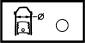
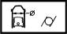
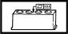

CRANKCASE AND COMPONENTS
- Path
- Technical Data > 10 ENGINE > 1004 ENGINE AND POWER UNIT > CRANKCASE AND COMPONENTS
- Kind
- technical data / specifications
- Applies to
- engines: 2.0 JTS, 3.2 V6, 1.9 JTD 16V; all production periods
- Interactive page
- https://sloeber94.github.io/elrnDB-aGt/en/#/125000082
Applies to: engines: 2.0 JTS, 3.2 V6, 1.9 JTD 16V; all production periods
Cylinder bore diameter (mm) | Validity |  | ||
|---|---|---|---|---|
Category B | Category C | Classe A | ||
82.010 - 82.020 | 82.020 - 82.030 | 82.000 - 82.010 | 1.9 JTD 16V | |
Cylinder bore ovalization (mm) | Validity |  | ||
|---|---|---|---|---|
< 0.05 | 1.9 JTD 16V | |||
Cylinder bore taper (mm) | Validity |  | ||
|---|---|---|---|---|
< 0.005 | 1.9 JTD 16V | |||
Cylinder liner oversize (mm) | Validity |  | ||
|---|---|---|---|---|
0.1 | 1.9 JTD 16V | |||
Flatness of cylinder head supporting surface (mm) | Validity |  | ||
|---|---|---|---|---|
< 0.1 | 1.9 JTD 16V | |||